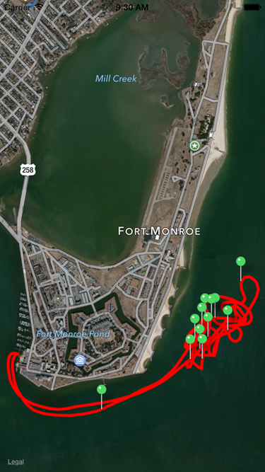

|
 |
 |
 |
|
 |
|
 |
|
 |
|
 |
 |
Learning Objectives
Table of Contents
Step 0: Earlier Phases of the Software Life Cycle
We assume that earlier phases of the Software Life Cycle have been completed. See Dr. Balci's Software Life Cycle. The life cycle processes Problem Formulation, Requirements Engineering, Architecting, and Design are assumed to be completed. In this tutorial, we focus on the Programming process.
Step 1: Application Functionality Specification
The GeoTracker app is designed as a universal iOS app to run on all iOS devices. The app reads in the Global Positioning System (GPS) track data in Comma-Separated Values (CSV) plain text file containing the GPS data collected about the movements of a boat in James River, Virginia on July 18, 2011. The app displays the geographical (geo) track formed by the GPS data as shown with the red polylines in the screenshots below. Each green pin represents a map annotation object. Tapping a green pin displays the annotation for the selected waypoint. Each annotation consists of Date, Time, Speed, Direction, Longitude, Latitude, and Altitude of that waypoint. Both portrait and landscape device orientations are supported.
iPhone Portrait iPhone Landscape  iPad Portrait iPad Landscape
Step 2: Creation of a New Project
Step 3: Input Data in Comma-Separated Values (CSV) File Format
- Launch Xcode. Create a new project by selecting File → New → Project...
- Select iOS → Application → Single View Application template. Click Next.
- In the Choose options for your new project dialog,
- Enter Product Name as GeoTracker.
- Enter Your Name as Organization Name.
- Enter com.yourname as your company/organization unique identifier.
- The string com.yourname.GeoTracker becomes the Bundle ID for your application uniquely identifying it in the App Store for distribution.
- Select Swift as the programming language to use.
- Select Universal for the Devices, implying that the app will run on all iOS devices.
- Click Next. In the File Browser window displayed,
- Select a location on your hard disk to store your project.
- Uncheck Source Control to disable version control. Click Create to create your project.
General Project Settings
- Click the project name GeoTracker in the project navigator to display the General project settings.
- Click the Team pop-up menu and select your iOS Developer Program account name from the list displayed.
- Check all device orientations.
Copying Files into Your Project
- Download the GeoTracker_files.zip file.
- Uncompress it.
- Click Images.xcassets in the project navigator to display the Image Assets Pane.
- Drag and drop the following downloaded folders into the Image Assets Pane:
- App Icons
- Launch Images
- Drag the file TrackData.csv and drop it into the GeoTracker group in the project navigator pane. Select the Copy option in the dialog box. Click Finish.
Setting the App Icons
- Click AppIcon in the Image Assets Pane.
- Select iOS 8.0 and Later Sizes and iOS 7.0 and Later Sizes for iPhone and iOS 7.0 and Later Sizes for iPad under the Attributes Inspector.
- Click the Media Library icon in the Library Selector Bar to show all of the image assets for the project.
- Drag and drop an app icon to its corresponding placeholder in the AppIcon assets area.
Setting the Launch Image
- Click LaunchScreen.xib in the project navigator to display its content.
- Click the View (UIView) object to select it.
- Select the title and copyright labels and press the Delete key to delete them.
- Show the Object Library. Drag an Image View (UIImageView) object from the Object Library and drop it on the canvas.
- Click the Image View object to select it.
- Under the Attributes Inspector:
- Select LaunchImage1080x1920 from the Image pull-down menu as the launch image to show.
- Set View Mode to Aspect Fill
- Apply Constraints:
- Click the Pin tool to show it and pin it to have 0 distance from each of the 4 edges of the device.
Linking the Frameworks Needed
Our app displays the track data using polylines on an Apple map created by using the MapKit and CoreLocation frameworks. To provide this functionality, add the following two frameworks to the project.
- CoreLocation.framework
- MapKit.framework
Create a Group called Frameworks and move the newly generated files into it.
The Comma-Separated Values (CSV) plain text file, TrackData.csv, shown below in Microsoft Excel, contains the GPS data collected about the movements of a boat in James River, Virginia on July 18, 2011.
Step 4: User Interface Development
Step 5: Map Annotation Class Development
Copy and paste the documented code given below. Carefully study the code, understand what it is doing, and learn from it!
The MapAnnotation.swift file:
//
// MapAnnotation.swift
// GeoTracker
//
// Created by Osman Balci on 10/22/14.
// Copyright (c) 2014 Osman Balci. All rights reserved.
//
import UIKit
import MapKit
class MapAnnotation: NSObject, MKAnnotation {
/*
"The MKAnnotation protocol is used to provide annotation-related information to a map view. To use this protocol, you adopt it
in any custom objects that store or represent annotation data. Each object then serves as the source of information about a
single map annotation and provides critical information, such as the annotation’s location on the map. Annotation objects do not
provide the visual representation of the annotation but typically coordinate (in conjunction with the map view’s delegate) the
creation of an appropriate MKAnnotationView object to handle the display.
An object that adopts this protocol must implement the *** coordinate *** property.
The other methods of this protocol are optional." [Apple]
*/
var coordinate:CLLocationCoordinate2D
var annotationTitle:String
var annotationSubtitle:String
init(coordinate:CLLocationCoordinate2D, title: String, subtitle: String) {
self.coordinate = coordinate
annotationTitle = title
annotationSubtitle = subtitle
}
func title() -> String{
return annotationTitle
}
func subtitle() -> String{
return annotationSubtitle
}
}
Step 6: View Controller Class Development
Copy and paste the documented code given below. Carefully study the code, understand what it is doing, and learn from it!
The ViewController.swift file:
//
// ViewController.swift
// GeoTracker
//
// Created by Osman Balci on 10/22/14.
// Copyright (c) 2014 Osman Balci. All rights reserved.
//
import UIKit
import MapKit
class ViewController: UIViewController, MKMapViewDelegate, MKAnnotation {
// Object reference to Map Vew
@IBOutlet var mapView: MKMapView!
/*
"The MKPolyline class represents a shape consisting of one or more points that define connecting line segments.
The points are connected end-to-end in the order they are provided. The first and last points are not connected
to each other." [Apple]
*/
var tripTrack: MKPolyline?
/*
The MKPolylineRenderer class provides the visual representation for an MKPolyline overlay object. This renderer strokes
the line only; it does not fill it. You can change the color and other drawing attributes of the polygon by modifying the
properties inherited from the parent class. You typically use this class as is and do not subclass it." [Apple]
*/
var tripTrackRenderer: MKPolylineRenderer?
// Create and initialize an array to contain all annotation objects
var mapAnnotations = [MapAnnotation]()
// Create and initialize a rectangular area to bound all of the tracks
var trackBoundingBox: MKMapRect = MKMapRectMake(0.0, 0.0, 320.0, 320.0)
// Required MKAnnotation protocol property "coordinate" defines the center point (specified as a map coordinate) of the annotation.
var coordinate: CLLocationCoordinate2D = CLLocationCoordinate2DMake(0.0, 0.0)
/*
-----------------------
MARK: - View Life Cycle
-----------------------
*/
override func viewDidLoad() {
super.viewDidLoad()
// Set the map type to hybrid view
mapView.mapType = .Hybrid
// Create the trip track overlay
createTripTrack()
if tripTrack != nil {
// Trip track is successfully created
// Add the overlay object to the map view
mapView.addOverlay(tripTrack)
// Change the currently visible portion of the map and animate the change
mapView.setVisibleMapRect(trackBoundingBox, animated: true)
} else {
return
}
}
// Add map annotations after the view appears
override func viewDidAppear(animated: Bool) {
mapView.addAnnotations(mapAnnotations)
}
/*
--------------------------------
MARK: - Create Trip Track Method
--------------------------------
*/
// Creates the trip track as an MKPolyline overlay
func createTripTrack() {
//--------------------------
// Local Variables
//--------------------------
// A waypoint is a reference point in physical space used for navigation purposes.
var waypoints = [String]()
// Upper right corner map point of the box to bound all of the tracks
var upperRightCorner: MKMapPoint = MKMapPointMake(0.0, 0.0)
// Lower left corner map point of the box to bound all of the tracks
var lowerLeftCorner: MKMapPoint = MKMapPointMake(0.0, 0.0)
// Used for counting every 50 waypoints we selected to display
var count = 1
/*
TrackData.csv is a comma-separated values (CSV) plain text file that resides in the app's main bundle.
Under the Unix OS (e.g., iOS, MacOS), a file is created as a string of characters.
The String variable trackDataFileContents holds the entire contents of the TrackData.csv file.
*/
var trackDataFilePath: String? = NSBundle.mainBundle().pathForResource("TrackData", ofType: "csv")
var fileContents: String? = NSString(contentsOfFile: trackDataFilePath!, encoding: NSUTF8StringEncoding, error: nil)
if let trackDataFileContents = fileContents {
/*
The TrackData.csv file consists of lines formed by the newline "\n" characters.
Each line represents the following data for a waypoint: Date Time Speed Direction, Longitude, Latitude, Altitude
Kth element of the waypoints array contains the Kth line of the track data file, where K=0,1,2,3, ..., 643
The method componentsSeparatedByCharactersInSet returns an array containing substrings (i.e., the waypoints)
from trackDataFileContents that have been divided by the newline "\n" characters.
*/
waypoints = trackDataFileContents.componentsSeparatedByCharactersInSet(.newlineCharacterSet())
} else {
// Instantiate an alert view object
var alertView = UIAlertView()
alertView.title = "Unable to Access TrackData File!"
alertView.message = "The file does not reside in the application's main bundle (project folder)"
alertView.delegate = nil
alertView.addButtonWithTitle("OK")
alertView.show()
return
}
// Determine the number of waypoints
var numberOfWaypoints = waypoints.count;
// Create an array of objects of type MKMapPoint
var arrayOfMapPoints = [MKMapPoint]()
for var j = 0; j < numberOfWaypoints; j++ {
// Obtain the current jth waypoint string corresponding to a line in the track data file
var waypoint: String? = waypoints[j]
// Store the comma-separated components of the waypoint string into the array waypointData
var waypointData: Array = waypoint!.componentsSeparatedByCharactersInSet(NSCharacterSet(charactersInString: ","))
/*
waypointData[0] = date, time, speed, and direction
waypointData[1] = longitude
waypointData[2] = latitude
waypointData[3] = altitude
*/
// Obtain longitude and latitude as Double values
var longitude: CLLocationDegrees = NSString(string: waypointData[1]).doubleValue
var latitude: CLLocationDegrees = NSString(string: waypointData[2]).doubleValue
// A map coordinate is a latitude and longitude on the spherical representation of the Earth.
// Create a map coordinate using latitude and longitude values.
var mapCoordinate: CLLocationCoordinate2D = CLLocationCoordinate2DMake(latitude, longitude)
// After every 50 waypoints, create an annotation object and add it to the array mapAnnotations
if j == count * 50 {
++count // i.e., count = count + 1
// Compose the altitude subtitle
var altitudeSubtitle = "Altitude = \(waypointData[3])"
// Instantiate a map annotation object with title waypointData[0] and subtitle altitudeSubtitle at mapCoordinate
var mapAnnotation = MapAnnotation(coordinate: mapCoordinate, title: waypointData[0], subtitle: altitudeSubtitle)
// Append the newly created map annotation object to the array of map annotation objects
mapAnnotations.append(mapAnnotation)
}
// A map point is an x and y value on the Mercator map projection.
// Convert the map coordinate to a map point, which is a Struct with mapPoint.x and mapPoint.y
var mapPoint: MKMapPoint = MKMapPointForCoordinate(mapCoordinate)
// Compute the current values of upperRightCorner and lowerLeftCorner of the bounding box
if j == 0 {
upperRightCorner = mapPoint
lowerLeftCorner = mapPoint
}
else {
if mapPoint.x > upperRightCorner.x {
upperRightCorner.x = mapPoint.x
}
if mapPoint.y > upperRightCorner.y {
upperRightCorner.y = mapPoint.y
}
if mapPoint.x < lowerLeftCorner.x {
lowerLeftCorner.x = mapPoint.x
}
if mapPoint.y < lowerLeftCorner.y {
lowerLeftCorner.y = mapPoint.y
}
}
// Append the new mapPoint into arrayOfMapPoints
arrayOfMapPoints.append(mapPoint)
}
// Create the tripTrack as a polyline using the arrayOfMapPoints.
// Pass by Reference: The object reference of arrayOfMapPoints is passed using the & operator.
tripTrack = MKPolyline(points: &arrayOfMapPoints, count: numberOfWaypoints)
// Compute a box to bound all of the tracks so that we can zoom in on it.
var width: Double = upperRightCorner.x - lowerLeftCorner.x
var height: Double = upperRightCorner.y - lowerLeftCorner.y
trackBoundingBox = MKMapRectMake(lowerLeftCorner.x, lowerLeftCorner.y, width, height)
}
/*
------------------------------------------
MARK: - MKMapViewDelegate Protocol Methods
------------------------------------------
*/
/*
"Asks the delegate for a renderer object to use when drawing the specified overlay.
mapView = The map view that requested the renderer object.
overlay = The overlay object that is about to be displayed.
Returns = The renderer to use when presenting the specified overlay on the map." [Apple]
*/
func mapView(mapView: MKMapView!, rendererForOverlay overlay: MKOverlay!) -> MKOverlayRenderer! {
var polylineRenderer: MKPolylineRenderer?
if overlay is MKPolyline {
if tripTrackRenderer == nil {
tripTrackRenderer = MKPolylineRenderer(overlay: overlay)
tripTrackRenderer?.fillColor = .redColor()
tripTrackRenderer?.strokeColor = .redColor()
tripTrackRenderer?.lineWidth = 3
}
polylineRenderer = tripTrackRenderer
}
return polylineRenderer
}
/*
"Returns the view associated with the specified annotation object.
mapView = The map view that requested the annotation view.
annotation = The object representing the annotation that is about to be displayed.
Returns = The annotation view to display for the specified annotation" [Apple]
*/
func mapView(mapView: MKMapView!, viewForAnnotation annotation: MKAnnotation!) -> MKAnnotationView! {
var pinAnnotationView = MKPinAnnotationView(annotation: annotation, reuseIdentifier: "WaypointInfo")
pinAnnotationView.animatesDrop = true
pinAnnotationView.canShowCallout = true
pinAnnotationView.pinColor = .Green
return pinAnnotationView
}
func mapViewWillStartLoadingMap(mapView: MKMapView!) {
UIApplication.sharedApplication().networkActivityIndicatorVisible = true
}
func mapViewDidFinishLoadingMap(mapView: MKMapView!) {
UIApplication.sharedApplication().networkActivityIndicatorVisible = false
}
func mapViewDidFailLoadingMap(mapView: MKMapView!, withError error: NSError!) {
UIApplication.sharedApplication().networkActivityIndicatorVisible = false
// Instantiate an alert view object
var alertView = UIAlertView()
alertView.title = "Unable to Load Map!"
alertView.message = "Problem Description: \(error.localizedDescription)"
alertView.delegate = nil
alertView.addButtonWithTitle("OK")
alertView.show()
}
}
Build and run your application under the iOS Simulator for iPhone and iPad under different device orientations.